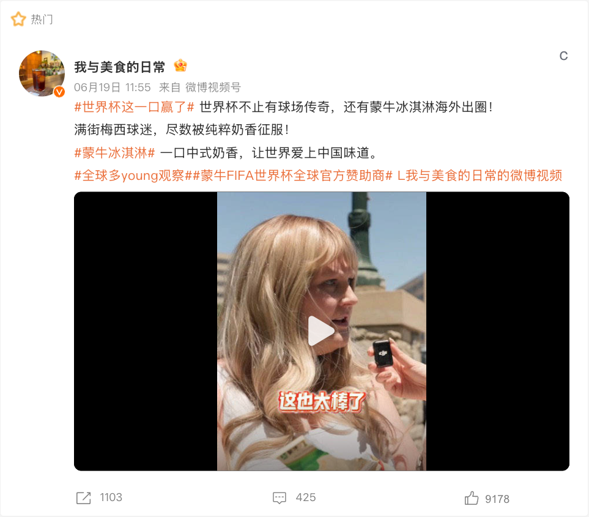
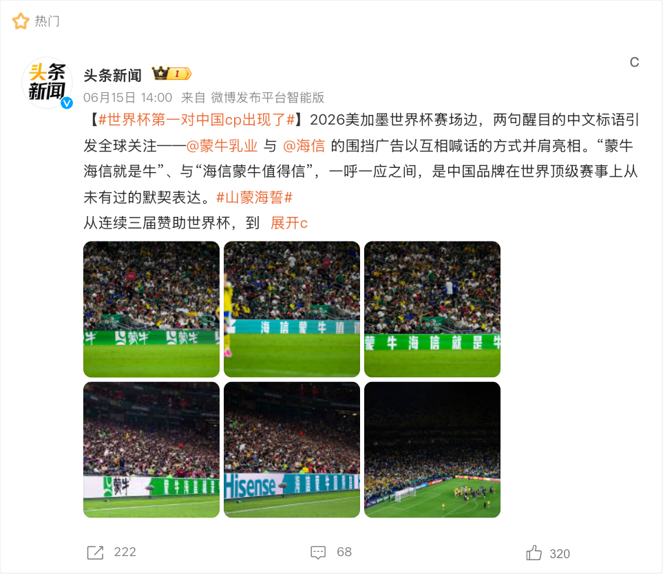

在本届世界杯里的动作CASE 005蒙牛：《冠军的秘密》资源溢出与“放下冠军”的赛后收束已核验 / 已归档CASE 006蒙牛：世界杯冰淇淋用可购买产品把全球权益落地海外零售已核验 / 已归档CASE 007蒙牛 x 海信：场边共创把单品牌围挡改写为中国品牌共同叙事已核验 / 已归档CASE 056蒙牛：补水暂停 + 节目高频规则时点叠加球星与零售资产已核验 / 已归档品牌页资料状态本页将品牌行动拆为独立案例，而不是简单罗列赞助头衔。每一案例的物料、来源和待核点详见对应内容页。对多品牌共创案例，各参与品牌页均保留入口。已归档视觉素材CASE 005 · 蒙牛：《冠军的秘密》CASE 006 · 蒙牛：世界杯冰淇淋CASE 007 · 蒙牛 x 海信：场边共创CASE 056 · 蒙牛：补水暂停 + 节目